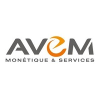
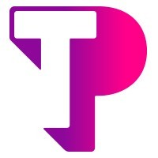

EXPERIENCES PROFESSIONNELLES
Dimosoftware
Référent Support Applicatif
depuis septembre 2019
Référent applicatif sur une équipe support d'une dizaine de personnes.
J'avais pour responsabilité en plus de ma mission de référent, le monitoring et ajustement sur nos ETL.
Mon expertise technique valait aussi pour toute la partie SQL.
Hegergeant nous-même l'application Notilus sur laquelle j'assurai le support, j'avais à charge la garantie de l'intégrité des bases de données SQL.
Ainsi, toute action de maintenance nécessitant des opérations sur les bases était géré par moi.
Un point mensuel avec nos équipe de développeur permettait d'être proactif sur les résolutions de bug.
| Gestion d'équipe | SQL | ETL | SSRS | Environnement Windows | Automic |
Umanis
Team Leader consultant BI
juin 2019 - septembre 2019
Team Leader de 3 équipes de développeurs SSIS réparties entre Lyon, Paris et Casablanca.
Mon rôle était d'assurer le bon déroulement des projets en cours en affectant les personnes sur les bonnes tâches au quotidien.
Il était aussi de ma responsabilité leur bonne montée en compétences du fait que la plupart était tout juste sorti d'école.
Sans formation particulière sur les flux SSIS et SSRS, il m'a fallu monté très vite en compétence afin d'assurer cet accompagnement.
J'ai aussi pu animé des ateliers d'étude de besoin auprès de nos clients.
Sur cette courte période de temps, j'ai donc tenu les casquettes de Team Leader, chef de projet ainsi que formateur.
| Team Leading | Gestion de projet | SSMS | SSIS | SSRS | Etude de besoin | Rédaction de spec client |
Mérieux Nutriscience
Analyste SQL
juin 2018 – juin 2019
Analyste SQL sur un outil de gestion d'échantillon en laboratoire.
J'avais à charge le support de l'outil en interne ainsi que le développement et debug de fonctionnalités.
Le LIMS étant un outil très complexe, il m'a fallu redoubler d'effort pour assurer ces missions avec mon bagage technique.
J'ai cependant rapidement rattrappé mes lacunes afin d'assurer au mieu la tenu du poste.
En plus de mes actions de support, je développais très régulièrement des rapports permettant de rendre les données statistiques des laboratoires.
| ORACLE | SQL | Crystal | LIMS | ITIL |
Dimosoftware
Technicien Support Applicatif
novembre 2016 – juin 2018>
Technicien support sur un outil de gestion de note de frais.
Le poste consistait en grande partie à de la prise de ticket de niveau 3 et au monitoring d'interface ordonnancé pour l'exportation de données comptables.
Une partie de poste consistait également à la maintenance des ETL et la prise en compte des demandes d'évolutions remontées par le client.
L'application étant hébergée en mode SAAS, nous assurions également les opérations de maintenances sur les bases SQL ainsi que la résolution de bug simples.
Quelques demande de reporting pouvait également nous être soumises.
Il s'agissait de ma première expérience significative sur le SQL.
Technologie pour laquelle je n'ai reçu aucune formation et qu'il m'a donc fallu apréhender en totale autonomie.
| Support Technique | SQL | Reporting | Monitoring | ETL |

Avem
Technicien Support Monétique
mai 2015 - novembre 2016
Technicien support monétique software et hardware sur les terminaux de paiement électronique (TPE).
Nous assurions le support de niveau 2 via des tickets escalader par la hotline sur les problématiques techniques complexes.
Il était aussi de notre ressort le traitement des réclamations client, il s'agissait alors de trouver une solutions technique rapide ainsi que la mise en place éventuel de geste commercial.
La gestion des clients grand compte nous incombait également ainsi que la logistique et la gestion du parc du matériel loué.
| Support Technique | Gestion de parc | Traitement des flux monétique | Gestion des réclamations |

Alten
Technicien Support
décembre 2012 – janvier 2015
Technicien support réseau et télécom de niveau 2 pour le compte de Bouygues Telecom.
Le service gérait la gestion des incidents technique complexes remontés par la hotline afin de mettre en place les solutions de dépannages adéquates.
Nous assurions également la rédaction de documentation technique ainsi que des process de traitement d'incident pour la hotline.
| Support Technique | Rédaction process | Pilotage technicien | Gestion des réclamations |

Téléperformance
Téléconseiller
février 2012 - septembre 2012
Téléconseiller en centre d’appel réseau et télécom pour le compte de Bouygues Telecom.
| Support Hotline | Qualification d'incident | Respect des procédures |